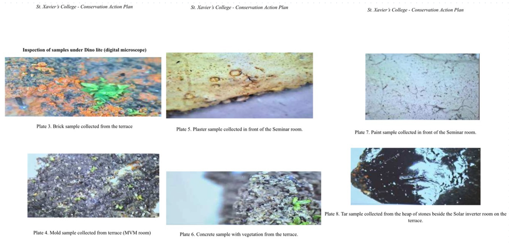
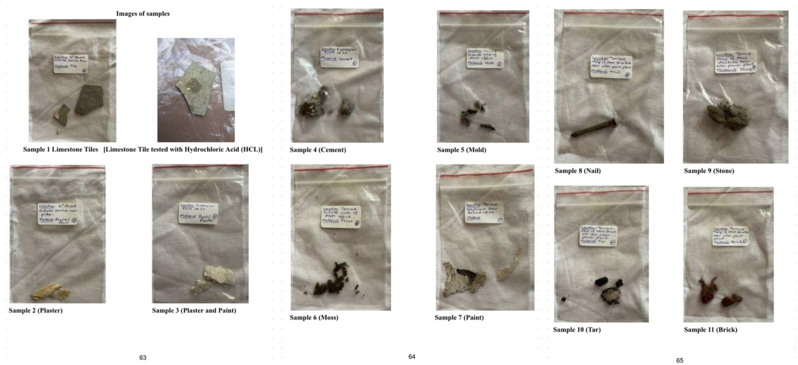

A comprehensive assessment of St. Xavier’s College, combining field documentation, scientific material analysis, and conservation planning to support the preservation of its cultural and historical significance.
Looking closely
Field surveys combined visual inspection with laser distometry, digital microscopy, UV light, GPS, and EpiCollect5. Google Earth mapping and collaborative surveys situated observations across the site.
Understanding the materials
Eleven samples were gathered from the chapel, terrace, expansion joint, and quadrangle. Chemical testing and microscopy identified basalt, limestone, rhyolite, and mortars, while revealing biodeterioration and structural decay.
Assessing the risks
A damage catalogue and risk matrix recorded cracking, water damage, biodeterioration, and structural deterioration. The assessment reported biodeterioration affecting 60% of terrace structures and identified vulnerabilities in expansion joints, floors, and masonry.
Turning evidence into a plan
Recommendations included water-repellent silane/siloxane sealants, regular maintenance, poultice treatments for stone staining, targeted rust removal, and restoration of missing architectural elements.
The outcome
The 68-page conservation action plan identifies high-risk areas and outlines preventive and remedial strategies. The work brought together field investigation, technical writing, project coordination, and collaboration with the Geology Department and library resources.
Images

